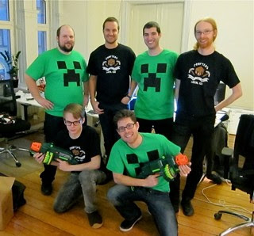

Chi siamo
Minecraft è stato sviluppato dalla società svedese Mojang Studios, creata da Markus "Notch" Persson nel 2009. Il gioco è poi cresciuto rapidamente, diventando uno dei più venduti al mondo. Nel 2014, Microsoft ha acquistato Mojang, continuando a sviluppare e supportare Minecraft, espandendolo con nuove funzionalità, edizioni e una vasta community di giocatori, educatori e creativi in tutto il mondo.
